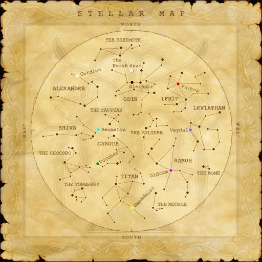

Level 75 reference · Zenith rules
Location:
Notes


Image source
- I am the theologian Adaunel. I'm now examining this map of the sky for heresies by that so-called "astronomer" of Windurst! Perhaps you could assist me. Why, to spend ten years scrawling all this rubbish... What a dull place Windurst must be! Look at the star map?
- "Yes.": [Shows a map of the constellations] Then, take a deep breath, for sinister signs may lurk between the lines of this "map." It's a pagan myth, you see. Look, lightning from the land of "Ramuh" in the southwest spawns the "Bomb" of fire! The angry gods call "Leviathan" from the western sea to put it out, washing away civilization... Or so that Windurstian claims. I cannot adibe the belief that Vana'diel, blessed of Altana herself, is just another dot in the sky! I'll debunk all this at the next symposium.
- "No.": I blame you not! Why, were there thestars not fixed upon the celestial sphere, they would fall from the sky! Everyone knows that!
Involved in Quests
Adapted from Eden Wiki: Adaunel · Contributors and history · CC BY-SA 4.0. Revision 27197. Layout, links and optional background text adapted for Zenith.